Công cụ tìm vòng tròn chủ yếu dùng để thực hiện việc khớp viền vòng tròn của chi tiết thực tế trong vùng ROI được chỉ định, từ đó lấy được phương trình phân tích của viền vòng tròn. Thường được sử dụng kết hợp với công cụ định vị, dựa trên các tham số như cực tính của biên để đạt độ chính xác cao. Hiệu quả thực tế được minh họa như Hình 1.
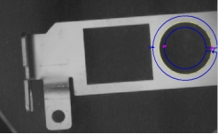
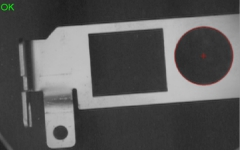
Tương tự nguyên lý công cụ tìm đường thẳng, công cụ tìm vòng tròn thiết lập các tham số thước đo trong vùng tìm kiếm để xác định các điểm biên trong ảnh, sau đó thực hiện khớp vòng tròn với các điểm biên tìm được, từ đó xác định vòng tròn mục tiêu, như hình dưới.
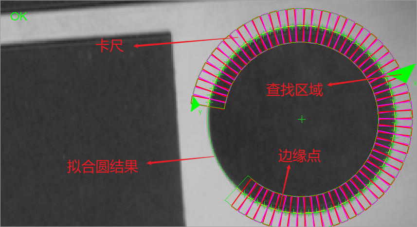
Công cụ tìm vòng tròn có thể được ứng dụng trong ba trường hợp chính:
Ảnh đầu vào: Ảnh cần kiểm tra.
Biến đổi tuyến tính 2D: Tham số này thường lấy từ công cụ định vị, biểu thị sự dịch chuyển, xoay và co giãn của đặc trưng mục tiêu trong ảnh hiện tại so với đặc trưng tương ứng trong ảnh mẫu. Khi kiểm tra trực tuyến thời gian thực, có thể điều chỉnh vùng tìm kiếm của công cụ tìm đường dựa trên tham số này.
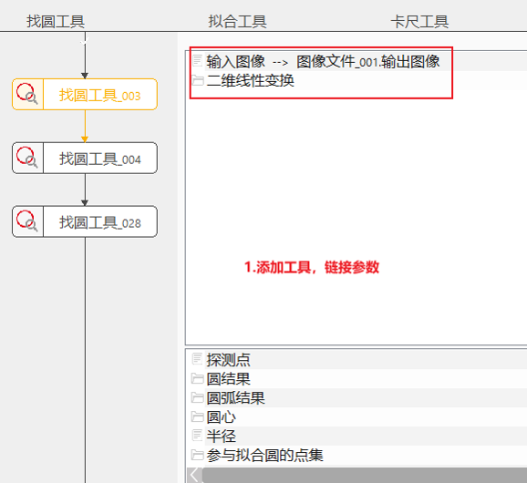
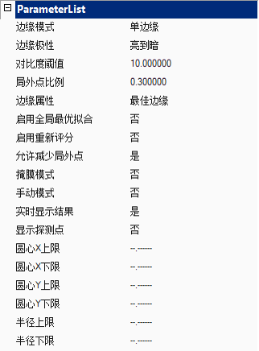
Các tham số quan trọng được giải thích dưới đây, các tham số còn lại có thể tham khảo mục “5. Giải thích tham số”.
Chế độ biên đơn và biên kép được minh họa trong Hình 2 và Hình 3. Khi sử dụng chế độ biên đơn, kết quả tìm vòng tròn hiển thị như đường cong màu đỏ trong Hình 2(b). Khi sử dụng chế độ biên kép, bố trí thước đo như Hình 3(a), vùng tìm kiếm của thước đo bao gồm hai biên, kết quả tìm vòng tròn là đường trung tuyến giữa hai biên (đường thẳng màu xanh trong Hình 3(b)), hiển thị như đường cong màu đỏ trong Hình 3(b).
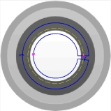
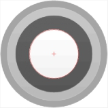
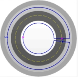
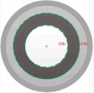
Cực tính biên của thước đo xác định theo sự chuyển đổi giá trị xám tại biên của ảnh. Như Hình 4, theo hướng trục Y của thước đo (hướng mũi tên đỏ), nếu giá trị xám chuyển từ sáng sang tối, chọn cực tính “sáng sang tối”; ngược lại chọn “tối sang sáng”. Nếu sự chuyển đổi không rõ ràng, có thể chọn bất kỳ cực tính nào.
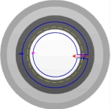
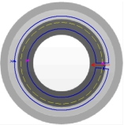
Như Hình 5, các dấu cộng màu đỏ là các điểm ngoại lai, không tham gia khớp vòng tròn. Tỷ lệ điểm ngoại lai là tỷ lệ các điểm ngoại lai trong tổng số điểm. Trong Hình 5, tỷ lệ này là 0.2. Thường cần thiết khi biên bị nhiễu nhiều, phải thiết lập tỷ lệ điểm ngoại lai.
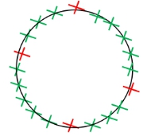
Đối với ảnh có nhiều biên, cần thiết lập các thuộc tính biên phù hợp.
Biên tốt nhất: Biên có sự chênh lệch giá trị xám lớn nhất hai bên trong vùng tìm kiếm;
Biên đầu tiên: Biên đầu tiên theo hướng trục Y của thước đo, phù hợp với cực tính biên;
Biên cuối cùng: Biên cuối cùng theo hướng trục Y của thước đo, phù hợp với cực tính biên;
Biên sáng tổng thể: Biên có giá trị trung bình hai bên sáng nhất trong vùng tìm kiếm;
Biên tối tổng thể: Biên có giá trị trung bình hai bên tối nhất trong vùng tìm kiếm;
Biên sáng bên sáng: Biên có bên sáng sáng nhất (giá trị xám bên sáng lớn nhất);
Biên tối bên sáng: Biên có bên sáng tối nhất (giá trị xám bên sáng nhỏ nhất);
Biên sáng bên tối: Biên có bên tối sáng nhất (giá trị xám bên tối lớn nhất);
Biên tối bên tối: Biên có bên tối tối nhất (giá trị xám bên tối nhỏ nhất).
Khi chọn chế độ biên kép, các thuộc tính biên như biên sáng tổng thể, biên tối tổng thể, biên sáng bên sáng, biên tối bên sáng, biên sáng bên tối và biên tối bên tối được xử lý như biên tốt nhất. Khi phạm vi tìm kiếm là toàn bộ ảnh, chế độ biên là biên đơn và cực tính biên chọn bất kỳ, kết quả tìm vòng tròn tương ứng với từng thuộc tính biên được minh họa trong Hình 6.
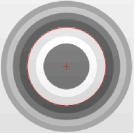
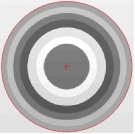
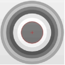
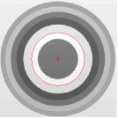
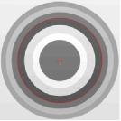
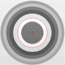
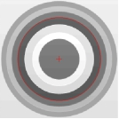
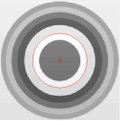
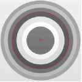
Công cụ tìm vòng tròn bổ sung chức năng đánh giá kết quả phát hiện (bao gồm tâm và bán kính). Người dùng có thể bật hoặc tắt chức năng đánh giá kết quả tương ứng. Khi kết quả vượt quá ngưỡng trên/dưới thiết lập, công cụ sẽ báo thất bại, người dùng có thể xử lý tiếp theo dựa trên kết quả này. Minh họa trong Hình 7.
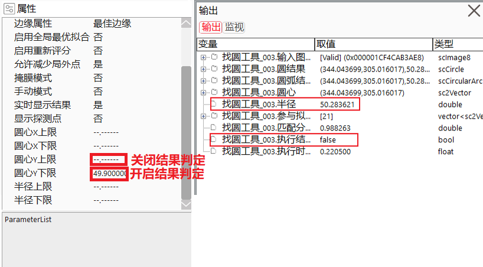
Công cụ tìm vòng tròn bổ sung ràng buộc mức xám cho các điểm biên phát hiện. Chỉ khi giá trị xám của điểm ảnh trong ảnh nằm trong [ràng buộc tối thiểu, ràng buộc tối đa] mới được coi là điểm phát hiện; nếu không sẽ bị coi là nhiễu hoặc nền và không dùng để khớp vòng tròn, giúp nâng cao độ chính xác tìm vòng tròn. Ràng buộc biên thứ nhất luôn có hiệu lực; khi bật chế độ biên kép, ràng buộc biên thứ hai xuất hiện với phạm vi: [0, ràng buộc tối thiểu, ràng buộc tối đa, 255]. Minh họa trong Hình 8.
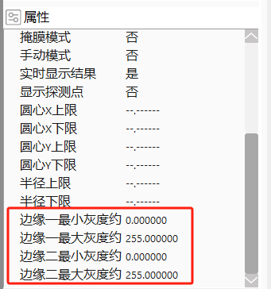
| Mô tả hiện tượng | Cách khắc phục |
|---|---|
| Không thể thiết lập mặt nạ cho ROI tìm vòng tròn | Kiểm tra tham số “Chế độ mặt nạ” trong thanh thuộc tính, chỉ khi chọn “Có” mới có thể thiết lập mặt nạ. |
| Không thể thiết lập tham số thước đo cho ROI tìm vòng tròn | Kiểm tra tham số “Chế độ thủ công” trong thanh thuộc tính, chỉ khi chọn “Có” mới có thể thiết lập tham số thước đo. |
| Tìm vòng tròn thất bại | 1. Tìm kiếm thất bại: Dựa vào thông báo lỗi trong cửa sổ đầu ra, điều chỉnh các tham số như ngưỡng tương phản, tỷ lệ điểm ngoại lai. 2. Đánh giá thất bại: Nếu ngưỡng trên/dưới của tâm và bán kính không hợp lý, điều chỉnh ngưỡng theo tình huống thực tế. |
| Tên tham số | Mô tả tham số |
|---|---|
| Ảnh đầu vào | Chiều rộng, chiều cao và kích thước điểm ảnh của ảnh đầu vào, giống với tham số ảnh đầu vào của cửa sổ ảnh. |
| Biến đổi tuyến tính 2D | Biến đổi dịch, xoay, tỷ lệ của đối tượng so với mẫu. |
| Chế độ biên | Công cụ tìm vòng tròn có 2 chế độ: biên đơn và biên kép. |
| Cực tính biên | Cực tính biên xác định hình thức chuyển tiếp giá trị xám của biên ảnh, có 3 loại: bất kỳ, sáng sang tối, tối sang sáng. |
| Ngưỡng tương phản | Thước đo mặc định chỉ sử dụng điểm số tương phản để đánh giá, chọn điểm có biên mạnh nhất. Ngưỡng từ 0 đến 255. |
| Tỷ lệ điểm ngoại lai | Điểm ngoại lai là những điểm lệch xa khỏi đường cong. Tỷ lệ điểm ngoại lai là tỷ lệ điểm không tham gia khớp vòng tròn, từ 0 đến 0.5. |
| Thuộc tính biên | Trong vùng tìm kiếm, thước đo xác định vị trí biên chính xác dựa trên thuộc tính biên. Có 9 loại: biên tốt nhất, biên đầu tiên, biên cuối cùng, biên sáng tổng thể, biên tối tổng thể, biên sáng bên sáng, biên tối bên sáng, biên sáng bên tối và biên tối bên tối. |
| Bật khớp tối ưu toàn cục | Chọn có/không để bật tính năng khớp tối ưu toàn cục. |
| Ràng buộc bán kính | Phạm vi [0.0, 10000.0] pixel, mặc định 0, không sử dụng khi tắt khớp tối ưu toàn cục. |
| Độ dung sai bán kính | Phạm vi [0.0, 10000.0] pixel, mặc định 0, chỉ hiệu lực khi bật khớp tối ưu toàn cục. Nếu dung sai lớn hơn ràng buộc, thuật toán tự điều chỉnh phạm vi. |
| Bật đánh giá lại | Chọn có/không để bật đánh giá lại kết quả. |
| Cho phép giảm điểm ngoại lai | Chọn có/không cho phép giảm điểm ngoại lai. |
| Chế độ mặt nạ | Thiết lập mặt nạ để loại bỏ vùng không tham gia huấn luyện mẫu, giảm các đặc trưng hình học tham gia huấn luyện. |
| Chế độ thủ công | Chọn "Có" để thiết lập thủ công tham số thước đo bằng chuột; "Không" để vô hiệu hóa. |
| Hiển thị kết quả thời gian thực | Chọn "Có" để xem kết quả ngay khi thay đổi tham số; "Không" cần chạy công cụ mới thấy kết quả. |
| Hiển thị điểm phát hiện | Chọn "Có" để hiển thị điểm thước đo; điểm ngoại lai màu đỏ, các điểm khác màu xanh; chọn "Không" không hiển thị. |
| Giới hạn X tâm | Ngưỡng tối đa tọa độ X tâm, phạm vi [0, 999999.999999], dưới ≤ trên. |
| Giới hạn X tâm thấp | Ngưỡng tối thiểu tọa độ X tâm, phạm vi [0, 999999.999999], dưới ≤ trên. |
| Giới hạn Y tâm cao | Ngưỡng tối đa tọa độ Y tâm, phạm vi [0, 999999.999999], dưới ≤ trên. |
| Giới hạn Y tâm thấp | Ngưỡng tối thiểu tọa độ Y tâm, phạm vi [0, 999999.999999], dưới ≤ trên. |
| Giới hạn bán kính cao | Ngưỡng tối đa bán kính, phạm vi (0, 999999.999999], dưới ≤ trên. |
| Giới hạn bán kính thấp | Ngưỡng tối thiểu bán kính, phạm vi (0, 999999.999999], dưới ≤ trên. |
| Ràng buộc xám biên 1 tối thiểu | Ngưỡng tối thiểu giá trị xám điểm ảnh biên 1, phạm vi [0, 255], dưới ≤ trên. |
| Ràng buộc xám biên 1 tối đa | Ngưỡng tối đa giá trị xám điểm ảnh biên 1, phạm vi [0, 255], dưới ≤ trên. |
| Ràng buộc xám biên 2 tối thiểu | Ngưỡng tối thiểu giá trị xám điểm ảnh biên 2, phạm vi [0, 255], dưới ≤ trên. (Hiệu lực khi bật biên kép) |
| Ràng buộc xám biên 2 tối đa | Ngưỡng tối đa giá trị xám điểm ảnh biên 2, phạm vi [0, 255], dưới ≤ trên. (Hiệu lực khi bật biên kép) |
| Tên tham số | Mô tả tham số |
|---|---|
| Ảnh đầu vào | Chiều rộng, chiều cao và kích thước điểm ảnh của ảnh đầu ra. |
| Kết quả vòng tròn | Tâm và bán kính của kết quả vòng tròn đầu ra. |
| Kết quả cung tròn | Tâm, bán kính và góc của kết quả cung tròn đầu ra. |
| Tâm vòng | Tâm của vòng tròn hoặc cung tròn. |
| Bán kính | Bán kính của vòng tròn hoặc cung tròn. |
| Tập hợp điểm tham gia khớp vòng | Tập hợp các điểm tham gia khớp vòng hoặc cung, loại bỏ các điểm ngoại lai. |
| Điểm số khớp | Mức độ khớp giữa kết quả vòng/cung với ảnh thực, giá trị càng gần 1 thì kết quả càng chính xác. |
| Kết quả thực thi | Kết quả thực thi của công cụ. |
| Thời gian thực thi | Thời gian thực thi của công cụ. |
参见“\Samples\形状间距及相关点.gvp”。